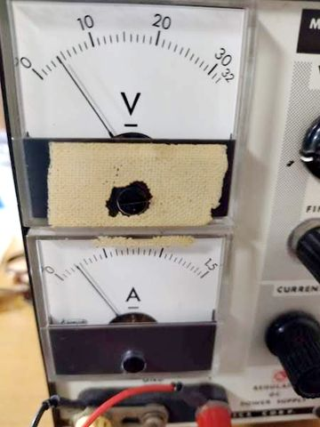
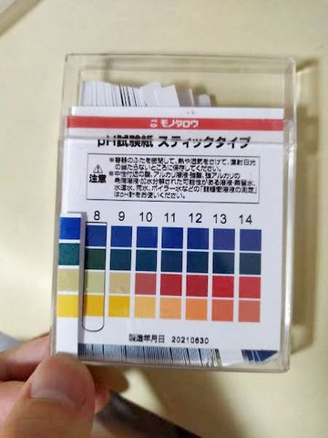

電気分解でアクリル塗装剥がし。失敗
電気分解でラッカー塗料のアクリル塗膜剥がしできないかやってみた。樹脂は半透膜のこともあるため期待してみて。
結果、全然ダメ。
陰極でも陽極でも剥がせない。
錆(サビ)は面白いくらいに落とせた。
処理対象はアクリル塗装付きの鉄板。

陽極は中華製炭素電極。
電解液は沸騰させた重曹水。
電流は0.25Aくらいからガツガツ泡が出る。

300クーロンほどしか流しないと思うが、phは予想通り上がった


他の塗装試してみた。
紙を束ねる用の黒クリップだと、モクモクと反応して塗装が劣化してくる。
黒塗装ではなくて、黒染め皮膜なのかも？
ちなみに、アクリル塗料でも水性塗料はマジックリンで簡単に洗い落とすことができる。
電気分解使うまでも無いくらいサクサク落ちるので驚いた。
こんなに弱いと、屋外で水性塗料使うの躊躇する。
ラッカー塗料はマジックリンでは全然洗い落とせなかった。シンナー使わないと落ちない。
2022/6/23